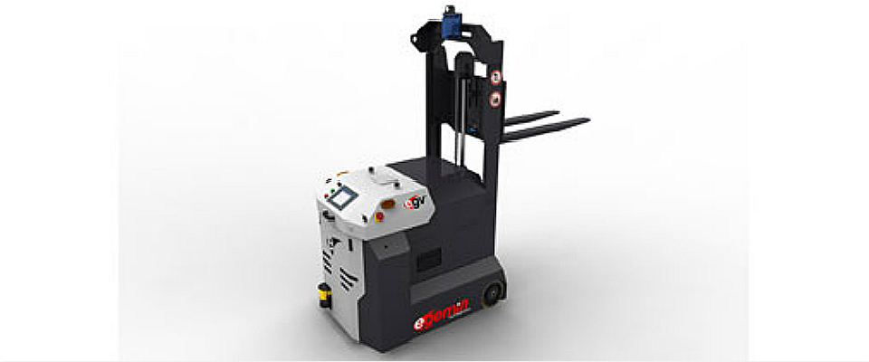
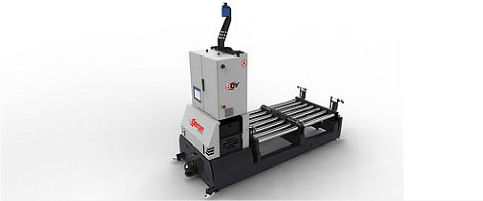
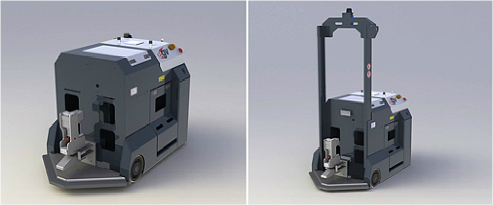
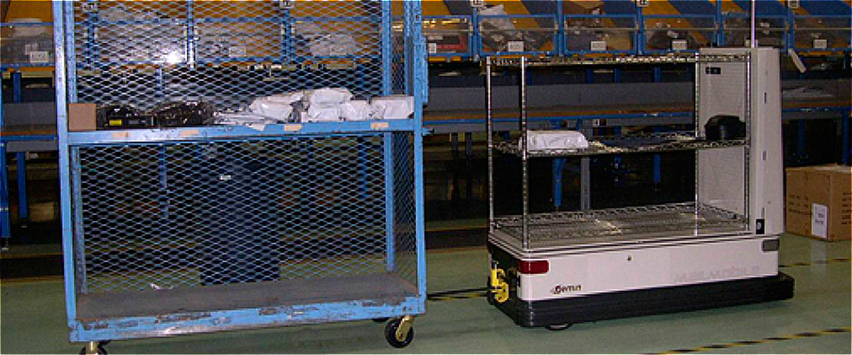
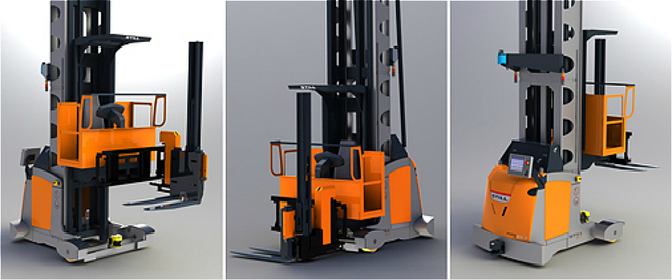
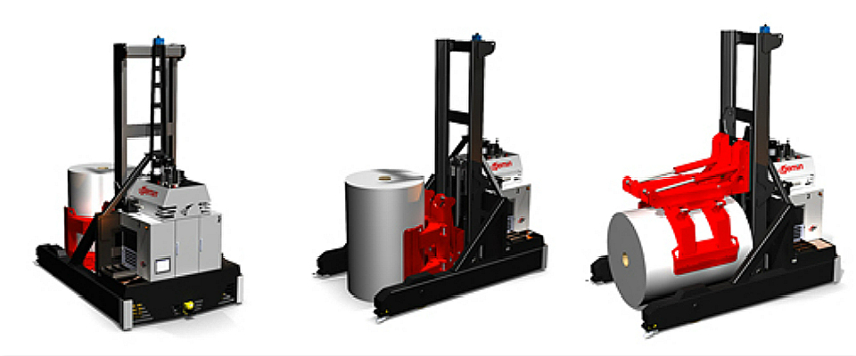

Hybrid AGVs move goods in and out of areas. Designed to quickly switch between manual and automated modes, Hybrid AGVs increase the productivity of warehouses and distribution centers while keeping costs under control.

FLVFork Lift Vehicle AGV
The FLV series include forklift AGVs that are able to automatically pick up and deliver pallets, containers, rolls, carts and many other conveyable loads. Automated guided vehicles with forks are the most common type of AGVs because they are so versatile. They can pick and drop load from floor level, racks, stands and driven conveyors.

LTVLoad Transfer Vehicle AGV
The LTV is designed to move loads at high throughput between workstations in a production environment or between the warehouse and production. These automated guided vehicles carry one, two or four loads at a time and interface with conveyors, stands, end-of-line equipment and automatic warehouse equipment.

tugger AGVProductive tugger AGV
Tugger AGVs pull non-driven carts that are charged with loads, either manually or automatically with an actuated hitch. These type of automated guided vehicles are the most productive AGVs as they are capable of carrying more goods than any other type. This allows for a considerable increase in capacity and efficiency, especially compared to traditional forklift trucks.

General AGVAGVs for automatic delivery of mail and packages
Mailmobiles are light-duty automated guided vehicles that automatically deliver mail from the central mail center to various workstations in single and multi-storey office buildings. Packmobiles are flexible and affordable automated guided vehicles for transport and delivery for blood specimens, prescription optics, packages, boxes, and parts.

VNAVery narrow aisle AGV
Very narrow aisle AGVs are used in high-bay racking aisles. Very narrow aisle trucks are commonly installed in distribution and warehousing applications. Because they are able to drive in narrow aisles they can easily replace traditional VNA trucks operated by man.

Clamp AGVClamp AGVs for handling of rolls and unpalletized loads
Egemin Automation designs produces automatic guided vehicles equipped with a clamp handling device instead of forks to handle unpalletized loads, boxes, rolls. These loads can be handled, lifted, transported with the same delicacy and flexibility as with forks.